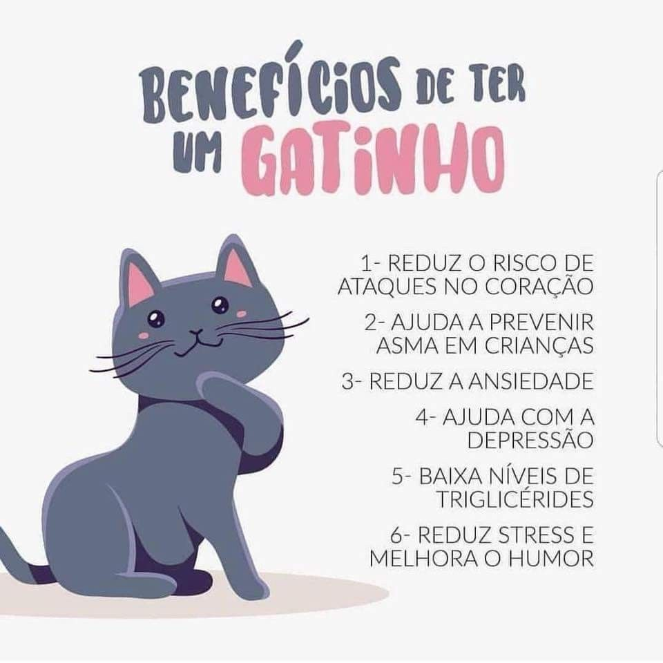

Além de deixar nossa vida muito mais completa e cheia de alegria, gatos são fascinantes, e possuem uma personalidade única! Adotar salva vidas. Ao cuidar bem de um animal que foi abandonado, você evita que mais uma vida fique vagando pelas ruas, podendo sofrer todos os tipos de maus-tratos.
Pesquisadores analisaram a saúde de tutores de gatos e comprovaram que os felinos ajudam a diminuir nossos níveis de estresse. Assim, os cientistas responsáveis concluíram que gateiros têm até 30% menos chances de morrer de um ataque de coração graças às vantagens de se ter um gato!
